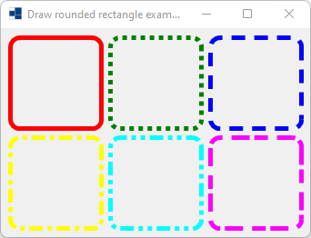
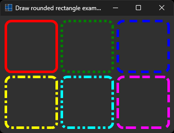
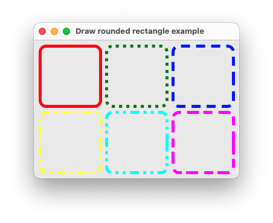
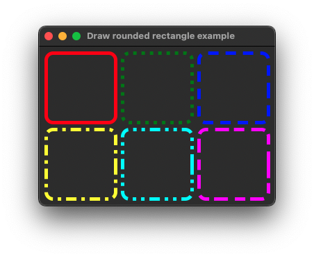
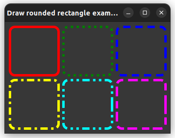

|
xtd
0.2.0
|
Loading...
Searching...
No Matches
draw_rounded_rectangle.cpp
shows how to draw rounded rectangle in paint event using xtd::drawing::graphics::draw_rounded_rectangle.
- Windows
- 

- macOS
- 

- Gnome


#include <xtd/xtd>
using namespace xtd;
using namespace xtd::drawing;
using namespace xtd::forms;
namespace examples {
public:
form1() {
text("Draw rounded rectangle example");
client_size({340, 230});
}
protected:
form::on_paint(e);
e.graphics().draw_rounded_rectangle(pen(color::red, 5), 10, 10, 100, 100, 10);
auto dot_pen = pen(color::green, 5);
dot_pen.dash_style(xtd::drawing::dash_style::dot);
e.graphics().draw_rounded_rectangle(dot_pen, 120, 10, 100, 100, 10);
auto dash_pen = pen(color::blue, 5);
dash_pen.dash_style(xtd::drawing::dash_style::dash);
e.graphics().draw_rounded_rectangle(dash_pen, 230, 10, 100, 100, 10);
auto dash_dot_pen = pen(color::yellow, 5);
dash_dot_pen.dash_style(xtd::drawing::dash_style::dash_dot);
e.graphics().draw_rounded_rectangle(dash_dot_pen, 10, 120, 100, 100, 10);
auto dash_dot_dot_pen = pen(color::cyan, 5);
dash_dot_dot_pen.dash_style(xtd::drawing::dash_style::dash_dot_dot);
e.graphics().draw_rounded_rectangle(dash_dot_dot_pen, 120, 120, 100, 100, 10);
auto custom_pen = pen(color::magenta, 5);
custom_pen.dash_style(xtd::drawing::dash_style::custom);
custom_pen.dash_pattern({4, 1, 3, 2});
e.graphics().draw_rounded_rectangle(custom_pen, 230, 120, 100, 100, 10);
}
};
}
auto main()->int {
application::run(examples::form1 {});
}
Defines an object used to draw lines and curves. This class cannot be inherited.
Definition: pen.h:35
Represents a window or dialog box that makes up an application's user interface.
Definition: form.h:65
@ dash_dot
Specifies a line consisting of a repeating pattern of dash-dot.
@ dash_dot_dot
Specifies a line consisting of a repeating pattern of dash-dot-dot.
The xtd::drawing namespace provides access to GDI+ basic graphics functionality. More advanced functi...
Definition: basic_colors.h:13
The xtd::forms namespace contains classes for creating Windows-based applications that take full adva...
Definition: about_box.h:13
The xtd namespace contains all fundamental classes to access Hardware, Os, System,...
Definition: system_report.h:17
Generated on Thu Apr 6 2023 23:02:45 for xtd by Gammasoft. All rights reserved.